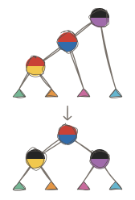
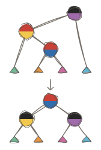
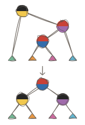
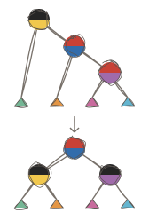

Guaranteeing logarithmic retrieval
The dictionary from the preceding case hides its constructors, but insertion can still build a long chain. Insert the associations (3, 30), (2, 20), and (1, 10) into an empty dictionary. Ordered insertion puts 2 below the left branch of 3, then 1 below the left branch of 2. Looking up 1 visits all three nodes. Repeating that pattern gives height h = n: one ordered branch can contain every key.
We want insertion to keep lookup paths short while retaining the same associations. For these three keys, 2 can be the root, with 1 and 3 as its children. Lookup still uses the key comparison from the preceding case. The change belongs in how insertion constructs the tree.
A hidden color on each nonempty node will tell insertion when a local path needs repair. We will develop that data, state the operations it needs, then calculate their bodies using the three-association example. Insertion is persistent: it returns a new dictionary, leaving the earlier value available. A data structure is called persistent when every update returns a new version while earlier versions remain usable. The structure this case develops — a sorted tree whose nonempty nodes hide a color, kept short by local rearrangements after insertion — is the literature’s red-black tree.
Describe the colored data
The keys and values retain their meanings. A Dictionary<K, V> associates keys of type K with values of type V. Its recursive alternatives tell us whether there is an association at the current position. The following non-executable declaration excerpt adds a color to the representation:
type Color =
Red
| Black
pub opaque type Dictionary<K, V> =
Empty
| Node(Color, Dictionary<K, V>, K, V, Dictionary<K, V>)Empty has no association. Node contains a color, the left dictionary, a key, its associated value, and the right dictionary, in that order. K and V describe every association in that tree. We reuse Natural, Option, Ordering, and the Order<K> comparison from the preceding case. The new Color has exactly two alternatives, Red and Black.
A color is useful only with rules for interpreting it. Empty counts as black. A black node adds one to the count on every path below it; a red node adds none. We call the common count, including the terminal Empty, the subtree’s black-height. It measures the black forms on a path, rather than all its nonempty nodes.
A subtree is recursively consistent when three conditions hold:
- It has the global ordering invariant from the preceding case. Every left descendant is
Lessthan the current key, and every right descendant isGreater. - A red node has no red child.
- Every path from the subtree root to
Emptycontains the same number of black forms.
A recursively consistent subtree may have a red root. A completed public dictionary adds one more condition: its root is black, unless the dictionary is Empty. Separating that final condition lets red subtrees participate in insertion. In the three-key result, a black 2 with black children 1 and 3 meets all four conditions: every path counts the root, one black child, and its terminal Empty, giving black-height three. A black 3 with only a red left child 2 also has equal counts. The shorter right path counts 3 and Empty; each longer left path counts the same two black forms. Equal black-height therefore allows some difference in total path length. The rule against adjacent red nodes limits how much longer a path can become.
The opaque declaration controls source access. Importers can name Dictionary<K, V>, but cannot name its constructors under Ash’s public and opaque declaration rules. The defining module can construct any of its forms, including invalid ones. Neither the nominal type nor Order<K> proves the representation laws. We must design the operations to preserve them.
State the operations we need
Work out the function types before filling their bodies. In the following type calculations, D abbreviates Dictionary<K, V> in the explanation; it is not a new Ash type or a declaration in the program. The source signatures keep the full spelling.
The public operation has the same job as before: insert a key and value into a valid dictionary. If the comparison is Equal, replace that association’s value; otherwise add the association. Return a valid dictionary with all other associations retained. We supply a key of type K, then a value of type V, then a dictionary of type D; the result must also have type D. Reading those inputs and the result in order gives K -> V -> D -> D. Comparison needs Order<K>, so the signature includes that requirement. The following source signature is a non-executable excerpt:
pub insert : K -> V -> Dictionary<K, V> -> Dictionary<K, V> where Order<K>Insertion still descends through one ordered branch. We need an internal operation that performs that descent while allowing a temporary red root or an edge between two red nodes. Its input is a recursively consistent subtree. Its result retains ordering and black-height, but may have a red-red edge directly below its red root. A black ancestor must repair that edge. The requirement on Order<K> supplies the comparison that selects the branch. Its job still takes a K, a V, and a D and returns a D, so insert_colored has the same function type as public insertion:
insert_colored : K -> V -> Dictionary<K, V> -> Dictionary<K, V> where Order<K>When recursion returns a child, the parent has its color, its two branches, and its own association available. Carry the left dictionary and the parent’s key and value together, leaving the color and right dictionary as separate inputs. This small private type gives that group a name:
type RArg<K, V> = RArg(Dictionary<K, V>, K, V)RArg means repair argument. Its constructor takes a dictionary, a key, and that key’s value. The dictionary lies immediately before the association in key order. Each group therefore describes one part of the ordered arrangement: a subtree followed by an association. The type groups those values; it does not establish their ordering or black-height conditions.
Rebuilding the parent now takes a Color, an RArg<K, V>, and a D, and returns a D. Those successive inputs calculate the signature of restore, which repairs a red-red edge beneath a black parent when it finds one:
restore : Color -> RArg<K, V> -> Dictionary<K, V> -> Dictionary<K, V>That repair rearranges three associations with four intervening subtrees; the rearrangement itself is the literature’s rotation. Three RArg values carry the first three subtrees and their following associations; one final D supplies the rightmost subtree. All four inputs produce one D. The different orientations will supply these same groups to one construction:
restore_three : (
RArg<K, V> -> RArg<K, V> -> RArg<K, V> ->
Dictionary<K, V> -> Dictionary<K, V>
)The arrows still describe successive calls. A constructed RArg is one argument to a call, so it has grouping parentheses when passed to another function. Its fields have already been collected into one value, like the tuple inputs from Learn.
Finally, internal insertion may return a red root. blacken_root restores the public root condition without searching the tree or changing an association. It receives one whole dictionary and returns one whole dictionary, giving D -> D:
blacken_root : Dictionary<K, V> -> Dictionary<K, V>We can already check how these operations fit together. Once we supply key : K and value : V, insert_colored key value has remaining type D -> D. Give it a dictionary and its result has type D. blacken_root accepts that result because its input type is also D. Its output is D, which is exactly what public insertion promises. We have calculated the connection between the two operations before choosing either body. Ash checks application inputs and results under its function and application typing rules.
These signatures describe the shapes of inputs and outputs. The purposes add requirements that the types do not express. Completed dictionaries and temporary insertion results have the same Dictionary<K, V> type; their stated conditions differ. In particular, restore is a local repair for candidates produced by insertion. It is not a general operation for correcting an arbitrary malformed tree.
Repair one colored path
We have the function types and the conditions each operation must maintain. Now fill the public operation, follow its call into recursive insertion, and develop the smaller repair it needs. The three-association example will let us check each choice with a concrete tree.
The following calculations are schematic source calculations, not runnable programs or tool output. Numerals stand for the corresponding Natural keys; values such as 10 remain integers.
Begin with the public goal. The type calculation already tells us how the two operations connect: obtain the internal insertion result, then pass that whole dictionary to blacken_root. Assuming those operations do their stated jobs, this expression gives public insertion the required result:
pub insert : K -> V -> Dictionary<K, V> -> Dictionary<K, V> where Order<K>
insert key value dictionary = blacken_root (insert_colored key value dictionary)The body names the two remaining jobs. We can develop each one from its promised input and result, starting with the insertion that produces the dictionary for blacken_root.
Insert into the recursive data
insert_colored must give public insertion a dictionary with the new or replaced association. Its input is either Empty or Node, so those two alternatives supply its first cases. At Empty, a new association needs two empty children. The replaced Empty contributes one black form. A red node above two Empty children also contributes one on each path, leaving the count unchanged. A black node would make that count two on only the entered branch. This determines the new node’s red color and gives the first expected result:
insert_colored 1 10 Empty
=> Node(Red, Empty, 1, 10, Empty)At a Node, comparison gives three cases. In the compact node pattern below, a and b name the left and right dictionaries, while k and v name the stored key and value. The separate key and value name the association being inserted. For Less, recur on a. Its type is D, and insert_colored key value a returns D. Assume this smaller call inserts the association and preserves ordering and black-height, allowing a red-red edge directly below a red root.
The returned dictionary belongs with the parent’s association in RArg(insert_colored key value a, k, v). Pass that group to restore after color, then supply b as the right dictionary. At a black parent, restore can repair the returned child’s edge; at a red parent, it reconstructs the subtree for the enclosing ancestor. This calculates the combining expression in the Less arm. Greater keeps RArg(a, k, v) and supplies the recursively returned right dictionary. Each recursive input is a smaller child, so descent through a finite dictionary reaches Empty or an equal key, provided the comparisons return.
On Equal, inserting (2, 99) over (2, 20) retains the stored key, children, and color, changing only the value. This supplies the middle arm without recursion or repair. The completed excerpt is:
insert_colored : K -> V -> Dictionary<K, V> -> Dictionary<K, V> where Order<K>
insert_colored key value Empty = Node(Red, Empty, key, value, Empty)
insert_colored key value Node(color, a, k, v, b) = match compare key k {
Less => restore color (RArg(insert_colored key value a, k, v)) b
Equal => Node(color, a, k, value, b)
Greater => restore color (RArg(a, k, v)) (insert_colored key value b)
}Repair the returned child
Insertion asks restore to rebuild a parent with one child replaced by the recursive result. A black parent may receive a red child with a red child of its own. The two red nodes can follow left-left, left-right, right-left, or right-right branches. These are the function’s four repair cases. We will follow each equation separately, then add a fallback for candidates that need no local repair.
Every case must retain the same three associations and four intervening subtrees. Short names let us compare the input pattern with the reconstruction: a, b, c, d are the subtrees from left to right; k means key and v means value. (k1, v1), (k2, v2), (k3, v3) are the associations in increasing key order. The indices indicate that order, rather than literal key values or insertion order:
a, (k1, v1), b, (k2, v2), c, (k3, v3), dEach case collects the first three subtree-and-association groups into RArg values and leaves d separate. The shared helper will place the middle association above black first and last nodes. For now, its promised result lets us calculate the calls that each case needs.
The optional sketches show each candidate above its repaired result. The upper half of a circle records red or black. The lower colors track the ordered associations: yellow is (k1, v1), blue is (k2, v2), and violet is (k3, v3). A white lower half marks Empty, which has no association.
The triangles track whole dictionaries: green is a, orange is b, pink is c, and cyan is d. Each subtree stays unchanged while its attachment changes. After repair, a and b belong below the yellow association; c and d belong below violet. The same colors appear before and after, so you can trace the rewiring without reading names inside the diagram.
Left-left.1 Inserting 3, 2, 1 gives our running candidate: black 3 above red 2 above red 1, following left branches. The black parent supplies the last association, (k3, v3); its red child supplies the middle, (k2, v2); and the red grandchild supplies the first, (k1, v1). The remaining fields name a, b, c, and d in their ordered positions:

restore Black RArg(
Node(Red, Node(Red, a, k1, v1, b), k2, v2, c),
k3,
v3
) d = (restore_three
(RArg(a, k1, v1))
(RArg(b, k2, v2))
(RArg(c, k3, v3))
d
)The repeated groups on the right show what survives the pattern. In this example, all four subtrees are Empty. The bindings supply this schematic call to the helper:
restore_three
(RArg(Empty, 1, 10))
(RArg(Empty, 2, 20))
(RArg(Empty, 3, 30))
Empty
=> red 2 above black 1 and black 3, with the same valuesLeft-right.2 Inserting 3, 1, 2 still puts the last association at the black parent. Its red left child now supplies the first association. The child’s red right branch supplies the middle. The second pattern selects that changed position, then sends the same ordered groups to the helper:

restore Black RArg(
Node(Red, a, k1, v1, Node(Red, b, k2, v2, c)),
k3,
v3
) d = (restore_three
(RArg(a, k1, v1))
(RArg(b, k2, v2))
(RArg(c, k3, v3))
d
)The destination remains red middle above black first and last. Only the fields from which we obtain the groups have changed.
Right-left.3 Inserting 1, 3, 2 puts the first association at the black parent and the last at its red right child. The child’s red left branch supplies the middle. The parent’s group already contains a, k1, and v1; the nested right pattern supplies the remaining pieces:

restore Black RArg(a, k1, v1) Node(
Red,
Node(Red, b, k2, v2, c),
k3,
v3,
d
) = (restore_three
(RArg(a, k1, v1))
(RArg(b, k2, v2))
(RArg(c, k3, v3))
d
)Here b and c come from the middle node’s children. Their names retain the same ordered positions as in the preceding cases, so the reconstruction call is unchanged.
Right-right.4 Inserting 1, 2, 3 puts the first association at the black parent, the middle at its red right child, and the last at that child’s red right branch. This is the final orientation:

restore Black RArg(a, k1, v1) Node(
Red,
b,
k2,
v2,
Node(Red, c, k3, v3, d)
) = (restore_three
(RArg(a, k1, v1))
(RArg(b, k2, v2))
(RArg(c, k3, v3))
d
)The four equations differ in where they find the first, middle, and last associations. Each requests the same reconstruction after collecting them.
When no repair case matches. Inserting 2 below black 3 creates only one red child, so there is no red-red edge to repair. Reconstruct the node from the supplied fields. The same fallback also reconstructs a red parent; if its child is red, an enclosing black ancestor will handle that edge:
restore color RArg(a, k, v) b = Node(color, a, k, v, b)Ash tries these patterns in source order and selects the first matching equation once the arguments have arrived. The final equation handles every remaining color and subtree shape. The pattern and coverage rules check that the equations cover the input type. The evaluation rules for matches and equations explain which body executes. Neither check establishes the ordering or black-height premises used in the repair calculation.
Construct the shared repair result
restore_three receives three RArg values and the final subtree d. Unpack the groups to name a, b, c, their keys, and their values. The middle association separates the first two subtrees from the last two. Place the first association above a and b, and the last above c and d. Those two constructed dictionaries become the middle node’s children.
Give the first and last nodes black colors to remove the red-red edge and allow red-rooted surrounding subtrees. Keep the middle root red to retain the black-height. For the running example, the four subtrees are Empty and the associations are (1, 10), (2, 20), and (3, 30). The expected local result makes the construction concrete:
Node(
Red,
Node(Black, Empty, 1, 10, Empty),
2,
20,
Node(Black, Empty, 3, 30, Empty)
)This is the result of the local repair, before public insertion blackens its root. Each value stays with its key. The larger drawing shows the general arrangement. It uses the same shapes and colors as the case sketches, with the program’s names beside them:
![Left-left repair from left to right. Black violet (k3, v3) has red blue (k2, v2) on its left and subtree d on its right. Blue has red yellow (k1, v1) on its left and c on its right; yellow has a and b. After repair, red blue (k2, v2) has black yellow (k1, v1) and black violet (k3, v3) children. Yellow retains a and b; violet retains c and d. The upper halves show Red or Black, lower colors identify the associations, and the colored triangles retain subtrees a, b, c, and d. The labels use the program's names.](assets/source-a0461b1f944e4e01-figure.svg)
The ordering tells us where each subtree belongs. a and b are the first node’s children; c and d are the last node’s children. The middle key separates the two constructed dictionaries. Each subtree must retain its inherited key bounds: a below k1, b between k1 and k2, c between k2 and k3, and d above k3. Their roots may be red; making the first and last nodes black also prevents a new red-red edge where those subtrees attach.
In the following definition, the three repeated let patterns unpack the input groups; the final expression rebuilds their components in the arrangement we just calculated. The local names retain the legend: ordered subtrees a, b, c, d and associations (k1, v1), (k2, v2), (k3, v3):
restore_three : (
RArg<K, V> -> RArg<K, V> -> RArg<K, V> ->
Dictionary<K, V> -> Dictionary<K, V>
)
restore_three first second third d = {
let RArg(a, k1, v1) = first
let RArg(b, k2, v2) = second
let RArg(c, k3, v3) = third
Node(
Red,
Node(Black, a, k1, v1, b),
k2,
v2,
Node(Black, c, k3, v3, d)
)
}This definition is a non-executable excerpt from the complete companion module. Its three local patterns each bind their own input group under Ash’s block and pattern rules. It constructs three dictionary nodes and passes the four subtree values unchanged into them. It needs no comparison: its caller must supply the associations and subtrees in the required order.
For the insertion candidates we will produce, the four surrounding subtrees are recursively consistent and have one common black-height. The candidate may contain the one red-red edge being repaired. If the common height is q, the former black grandparent contributes one, giving q + 1 on every path. The result’s black children each contribute one and its red root contributes none, so every path still has q + 1. This calculation explains why the colors in the body preserve the count.
Restore the public root condition
Internal insertion has kept the associations ordered and the path counts equal, but our calculated root is red. blacken_root has three meaningful inputs: Empty, a black node, or a red node. The first two already meet the public root condition and should be returned unchanged. For a red node, retain its association and both children and change only its color:
blacken_root : Dictionary<K, V> -> Dictionary<K, V>
blacken_root dictionary = match dictionary {
Empty => Empty
Node(Black, ignored_left, ignored_key, ignored_value, ignored_right) => dictionary
Node(Red, left, key, value, right) => Node(Black, left, key, value, right)
}For our local result, that final case returns black 2 with black 1 and 3 beneath it. Every path gains the same one black form. Recoloring the root changes neither ordering nor key-value associations.
Assemble and run the example
Starting with Empty, inserting (3, 30) creates red 3, then blackens it. Inserting (2, 20) leaves black 3 with a red left child because no repair pattern fits. Inserting (1, 10) now selects Less at both nodes. At Empty, the first equation returns red 1. The pending reconstruction at 2 receives that result:
restore Red (RArg(Node(Red, Empty, 1, 10, Empty), 2, 20)) Empty
=> Node(Red, Node(Red, Empty, 1, 10, Empty), 2, 20, Empty)Its parent color is red, so none of the four repair equations fits; the fallback produces the temporary red-red edge. The next pending reconstruction, at black 3, receives the candidate derived for the left-left repair. Its first pattern selects restore_three, which returns red 2 with black 1 and 3 as children.
The nested recursive expression is evaluated before restore receives that child value, under Ash’s strict application rules. The calculation therefore descends through comparisons, then reconstructs from the returned child toward the root. A repair can return a red root beneath a red ancestor; the next black grandparent handles that edge. Starting from a valid black-rooted dictionary ensures that any such edge has a black grandparent before the internal result reaches the top.
The final blacken_root call changes the returned red 2 to black. Predict that black root with black children 1 and 3, and the original values 10, 20, and 30 still paired with their keys.
The complete client below names the three Natural keys explicitly and uses only public operations. The impl Order import item supplies the public ordering implementation, as in the preceding case.
import dictionaries (Dictionary, Natural, Zero, Next, empty, insert, impl Order)
main : Unit -> Dictionary<Natural, Int>
main () = {
let one = Next(Zero)
let two = Next(one)
let three = Next(two)
let after_three = insert three 30 (empty ())
let after_two = insert two 20 after_three
insert one 10 after_two
}Run it from content/cases:
ash guaranteeing-logarithmic-retrieval/src/03-repair.ashNode(Black, Node(Black, Empty, Next(Zero), 10, Empty), Next(Next(Zero)), 20, Node(Black, Empty, Next(Next(Next(Zero))), 30, Empty)) : Dictionary<Natural, Int>The printed tree makes each predicted association and color visible. Opacity prevents the client from constructing or matching these nodes; the tool can still display the returned value. The result checks this particular calculation. It does not establish preservation for every dictionary.
The complete dictionary module also contains the ordering and balance checks used later in the chapter. valid_between checks inherited key bounds. A separate pass obtains each child’s black-height, rejects red-red edges and unequal counts, and a final check examines the root. Both passes bind both recursive child results before combining them. Ash’s strict binding rules mean that a completed validation enters both branches.
The defining module’s private main constructs five trees to distinguish these checks. Predict one true followed by four false values:
- a valid one-node black tree;
- a deeper key beyond an inherited ordering bound;
- a red root whose recursive properties otherwise hold;
- a red parent with red children whose ordering and black-height hold; and
- two root paths with different black counts.
Run the complete companion directly from content/cases:
ash guaranteeing-logarithmic-retrieval/src/dictionaries.ash(true, false, false, false, false) : (Bool, Bool, Bool, Bool, Bool)This observation distinguishes the selected malformed values from the valid one. The finite examples supplement the ordering and black-height calculations; they do not replace the argument about what repair preserves.
This functional insertion strategy takes conceptual inspiration from the tradition evaluated in the persistent red-black insertion record. The Ash program, diagram, derivation, examples, and exercises here are original.
Check every selected insertion prefix
The repair calculation ended with a valid dictionary containing (3, 30), (2, 20), and (1, 10). Could a final successful lookup hide a problem after an earlier insertion? Starting from the empty dictionary, we want observations after 3, after 3, 2, and after 3, 2, 1. Each is an insertion prefix: an initial part of the same input sequence.
After inserting (1, 10), finding that association is only one part of the answer. The dictionary must also retain earlier associations, keep its ordering and color conditions, and return no value for a key we never inserted. We will calculate a client that records selected facts after each step, then checks every association in the final dictionary.
Describe the input and observations
The input is a List<(Natural, Int)>: each element pairs a key with its expected value. For our three-step example, those pairs are (3, 30), (2, 20), and (1, 10), in that order. We also choose (3, 30) as the first association to retain, and 0 as an absent key. These numbers stand for the Natural values whose constructor forms we used in the repair client.
The report needs three new data types. PrefixCheck groups four Boolean observations about one dictionary, in this order:
- Its ordering, root color, red-child colors, and black-height satisfy the invariant.
- Lookup of the key just inserted returns its expected value.
- Lookup of the first inserted key still returns its expected value.
- Lookup of the selected absent key returns
None.
Scenario groups the empty dictionary’s invariant check, the list of those prefix checks, and a final list of association checks followed by the absence check. Keeping these observations separate lets us locate a failure in the run. A true invariant alone cannot tell us whether a value stayed with its key.
PrefixRun serves a different purpose inside the client. It returns the prefix checks together with the final dictionary, so another operation can examine that dictionary. The type keeps these two results together without exposing the dictionary’s hidden constructors.
The client uses the familiar complete import for qualified public names and selects Order implementations separately:
import dictionaries as Dictionaries
import dictionaries (impl Order)The three report declarations are non-executable excerpts from the complete client:
type PrefixCheck =
PrefixCheck(Bool, Bool, Bool, Bool)
type Scenario =
Scenario(Bool, Dictionaries.List<PrefixCheck>, Dictionaries.List<Bool>)
type PrefixRun =
PrefixRun(
Dictionaries.List<PrefixCheck>,
Dictionaries.Dictionary<Dictionaries.Natural, Int>
)List still has its ending form End and its More form containing one element and the rest. Option still distinguishes None from Some. What is new here is the purpose and order of the report fields, rather than another form of list or optional value. The Boolean types describe the shape of an observation; they do not establish that it will be true.
For the selected runs, keys are distinct, the retained pair is the first input pair, and the absent key does not occur in the input. Those choices make the expected report meaningful. If a later entry replaced a value for the same key, checking the earlier value in the final dictionary would correctly return false. Replacement belongs to the next example.
Choose the operation types
Start with the result we want. scenario consumes the entry list, the retained key and its expected value, and the absent key. It returns a Scenario:
scenario : Dictionaries.List<(Dictionaries.Natural, Int)> -> Dictionaries.Natural -> Int -> Dictionaries.Natural -> ScenarioIts body must begin with an empty dictionary and somehow obtain both the intermediate observations and the final dictionary. Give that task to prefix_run. Its inputs are the same four pieces of scenario information, followed by the dictionary to continue from. Its result must be PrefixRun, not just a list of checks, because the caller still needs the final dictionary:
prefix_run : Dictionaries.List<(Dictionaries.Natural, Int)> -> Dictionaries.Natural -> Int -> Dictionaries.Natural -> Dictionaries.Dictionary<Dictionaries.Natural, Int> -> PrefixRunSupplying the entries, retained pair, and absent key leaves a function from Dictionary<Natural, Int> to PrefixRun. In the recursive case we can supply the smaller remainder of the entries and the updated dictionary to that same operation. The type tells us what can connect; the calculation must determine what each check means and which dictionary to pass.
Lookup returns an optional value. We need two short operations to turn that answer into a Boolean observation. has_value receives an expected Int and an Option<Int>; it must report whether the value was found and agrees:
has_value : Int -> Dictionaries.Option<Int> -> Boolis_none receives an optional value and reports whether it is absent. It does not inspect the payload, so its signature can retain the type parameter A:
is_none : Dictionaries.Option<A> -> BoolFinally, lookup_checks consumes the complete entry list, the absent key, and one final dictionary. It returns a list of Boolean observations:
lookup_checks : Dictionaries.List<(Dictionaries.Natural, Int)> -> Dictionaries.Natural -> Dictionaries.Dictionary<Dictionaries.Natural, Int> -> Dictionaries.List<Bool>We have now described every operation needed by scenario. Fill their bodies from the overall result toward the smaller tasks.
Assemble a scenario
Create the empty dictionary with the concrete key and value types. Passing it to prefix_run produces a PrefixRun. Matching that result supplies checks and final_dictionary with the types required by the report. The empty invariant check is a Bool, checks is a List<PrefixCheck>, and applying lookup_checks to the original entries and final dictionary supplies the List<Bool>. Those are precisely Scenario’s three fields:
scenario : Dictionaries.List<(Dictionaries.Natural, Int)> -> Dictionaries.Natural -> Int -> Dictionaries.Natural -> Scenario
scenario entries retained_key retained_value absent_key = {
let empty : Dictionaries.Dictionary<Dictionaries.Natural, Int> = Dictionaries.empty()
let run = prefix_run entries retained_key retained_value absent_key empty
match run {
PrefixRun(checks, final_dictionary) => Scenario(
Dictionaries.invariant_holds empty,
checks,
lookup_checks entries absent_key final_dictionary
)
}
}The entry list has two uses. prefix_run consumes it to construct successive dictionaries. lookup_checks uses it as the associations to expect in the finished value. The final pass can therefore check all earlier associations, not just the first and the latest ones.
Record the next prefix and continue
prefix_run follows the entry list’s two forms. With End, there is no next insertion and no new prefix check. The required result is PrefixRun(End, dictionary): retain the supplied dictionary and return an empty check list.
With More(entry, rest), split the entry into key and value. Inserting that pair into dictionary returns next_dictionary of the same dictionary type. All four observations must examine this returned value. Checking the old dictionary would answer questions about the preceding prefix.
The four stated positions of PrefixCheck now determine the meanings of its Boolean expressions: validate next_dictionary, look up the new key and value, look up the retained key and value, then look up the absent key. The two small adapters already have the types needed to interpret those lookups.
The remaining work has the same form as the original task, with the smaller list rest. Assume that calling prefix_run on that remainder and next_dictionary returns its checks in insertion order and the dictionary after all remaining entries. Match that result, place current_check before later_checks, and return the same final_dictionary. This determines the complete equations:
prefix_run : Dictionaries.List<(Dictionaries.Natural, Int)> -> Dictionaries.Natural -> Int -> Dictionaries.Natural -> Dictionaries.Dictionary<Dictionaries.Natural, Int> -> PrefixRun
prefix_run Dictionaries.End retained_key retained_value absent_key dictionary = PrefixRun(
Dictionaries.End,
dictionary
)
prefix_run Dictionaries.More(entry, rest) retained_key retained_value absent_key dictionary = match entry {
(key, value) => {
let next_dictionary = Dictionaries.insert key value dictionary
let current_check = PrefixCheck(
Dictionaries.invariant_holds next_dictionary,
has_value value (Dictionaries.lookup key next_dictionary),
has_value retained_value (Dictionaries.lookup retained_key next_dictionary),
is_none (Dictionaries.lookup absent_key next_dictionary)
)
let later_run = prefix_run rest retained_key retained_value absent_key next_dictionary
match later_run {
PrefixRun(later_checks, final_dictionary) => PrefixRun(
Dictionaries.More(current_check, later_checks),
final_dictionary
)
}
}
}The base case supplies the promise for an empty remainder. The recursive case adds one observation to the front of the returned list, so the list order remains the insertion order. For a finite entry list, each call removes one More; the recursion reaches End, provided insertion and the checks return. The function records every Boolean result and continues even if one is false.
Each invariant check visits the whole current dictionary. This observation client therefore does more work than its insertions alone. The logarithmic bound later in the chapter concerns the search path; validation has its own cost.
The global scope rules allow these bodies to call helpers defined later in the complete source. The function and application rules check that the argument and result types fit. The list-order promise comes from the equations we just calculated.
Interpret the optional lookup results
For has_value, None cannot be the expected association. Some(actual) contains an Int, so compare it with expected:
has_value : Int -> Dictionaries.Option<Int> -> Bool
has_value expected Dictionaries.None = false
has_value expected Dictionaries.Some(actual) = expected == actualFor example, has_value 30 (Some(30)) is true, while both has_value 30 None and has_value 30 (Some(31)) are false. These are calculations from the two equations, rather than additional CLI observations.
For is_none, the None case is the successful absence observation; any present payload makes it false:
is_none : Dictionaries.Option<A> -> Bool
is_none Dictionaries.None = true
is_none Dictionaries.Some(ignored_value) = falseThe payload’s value and type do not affect that answer. These two small functions let the caller distinguish an absent association, a present wrong value, and the expected value.
Recheck every final association
The four prefix flags inspect the new association, one retained association, and an absent key. After inserting 1, they do not separately inspect 2. A final pass must therefore compare every input association against the final dictionary.
lookup_checks also follows the list’s two forms. With More(entry, rest), look up this entry’s key in the same final dictionary, compare its value, and place that Boolean before the checks for rest. With End, all associations have been examined; return a one-element list containing the absent-key check. The result has one flag per entry followed by that final absence flag:
lookup_checks : Dictionaries.List<(Dictionaries.Natural, Int)> -> Dictionaries.Natural -> Dictionaries.Dictionary<Dictionaries.Natural, Int> -> Dictionaries.List<Bool>
lookup_checks Dictionaries.End absent_key dictionary = Dictionaries.More(
is_none (Dictionaries.lookup absent_key dictionary),
Dictionaries.End
)
lookup_checks Dictionaries.More(entry, rest) absent_key dictionary = match entry {
(key, value) => Dictionaries.More(
has_value value (Dictionaries.lookup key dictionary),
lookup_checks rest absent_key dictionary
)
}For the running example, the list positions refer to (3, 30), (2, 20), (1, 10), and absence of 0. To see why the middle check matters, consider a dictionary containing only (3, 30) and (1, 10). It can satisfy the invariant, contain the new 1 and retained 3, and omit 0, yet the check for (2, 20) must be false. This is a deliberately incomplete dictionary, not the result of our insertion run. It distinguishes what the final pass asks from what the four local flags ask.
Assemble the inputs and read the result
The complete client’s main returns six Scenario values:
main : Unit -> (Scenario, Scenario, Scenario, Scenario, Scenario, Scenario)It begins by constructing the seven Natural keys. These lines are an excerpt from inside main, so their indentation is retained:
let one = Dictionaries.Next(Dictionaries.Zero)
let two = Dictionaries.Next(one)
let three = Dictionaries.Next(two)
let four = Dictionaries.Next(three)
let five = Dictionaries.Next(four)
let six = Dictionaries.Next(five)
let seven = Dictionaries.Next(six)The running input is the list whose first entry is (three, 30) and whose remainder contains (two, 20) and (one, 10):
let left_left = Dictionaries.More(
(three, 30),
Dictionaries.More((two, 20), Dictionaries.More((one, 10), Dictionaries.End))
)The complete source also constructs ascending and descending seven-key lists and the other three repair orientations. Its final tuple supplies each list, its first association, and Zero as the absent key:
(
scenario ascending one 10 Dictionaries.Zero,
scenario descending seven 70 Dictionaries.Zero,
scenario left_left three 30 Dictionaries.Zero,
scenario left_right three 30 Dictionaries.Zero,
scenario right_left one 10 Dictionaries.Zero,
scenario right_right one 10 Dictionaries.Zero
)Predict true for each empty check and all four flags after each insertion. The final list should also contain only true: every exact association remains available, and Zero remains absent. Run the complete client from content/cases:
ash guaranteeing-logarithmic-retrieval/src/01-prefix-matrix.ashThe command returns one tuple containing all six scenarios. Read the left-left scenario, the third tuple element, in smaller parts below. Each fence contains a field or list element of that same captured value; the surrounding tuple, Scenario constructor, and other fields are omitted. These are selected observations, not separate program outputs.
Before any insertion, the scenario’s first field is the empty invariant check:
trueAfter (3, 30), its first prefix check is:
PrefixCheck(true, true, true, true)Read the four positions as invariant, (3, 30), retained (3, 30), and absence of 0. The second and third positions test the same association at this first step; their jobs differ once another entry is inserted.
After (2, 20), the next prefix check is:
PrefixCheck(true, true, true, true)Now the second position checks (2, 20) and the third checks the earlier (3, 30). The first and fourth positions continue to check the invariant and absence of 0 in this two-entry dictionary.
After (1, 10), the third prefix check is:
PrefixCheck(true, true, true, true)The repair has preserved the invariant and the new and retained associations. The final pass then examines all three pairs in input order, followed by absence of 0:
More(true, More(true, More(true, More(true, End))))Each More supplies the next Boolean and the final End ends the list. The second flag checks the middle association (2, 20), which the last prefix’s four local flags did not inspect separately.
The same captured tuple gives the following counts. Each prefix check contains four true flags, and every final flag is true:
| Input order | Empty | Prefix checks | Final flags |
|---|---|---|---|
Ascending 1 to 7 |
true |
7 | 8 |
Descending 7 to 1 |
true |
7 | 8 |
Left-left 3, 2, 1 |
true |
3 | 4 |
Left-right 3, 1, 2 |
true |
3 | 4 |
Right-left 1, 3, 2 |
true |
3 | 4 |
Right-right 1, 2, 3 |
true |
3 | 4 |
The seven-key scenarios create seven prefix observations and eight final flags: seven exact associations plus the absence. Each three-key scenario creates three prefix observations and four final flags. The matrix exercises the four named repair orientations and repeated repairs under ascending and descending input.
These finite observations can expose a faulty repair. They do not establish preservation for every dictionary by enumeration. That general argument still depends on the source equations, representation conditions, and ordering premises. The client makes selected consequences of that argument observable at each insertion boundary.
Retain build, replacement, and older values
Balancing changes the hidden shape, not the public dictionary operations. The next client first inserts two and one, retains that older dictionary, replaces two with 99, and extends only the newer dictionary with three. It also builds the extended value independently from the input order (two, 20), (one, 10), (two, 99), (three, 30).
Predict four valid dictionaries. Lookup of two should return 20 in the old value and 99 in both later constructions. Lookup of three should return None in the old value and Some(30) in the extended and built values. The structural part should show a black root with red children where those children are present.
import dictionaries as Dictionaries
import dictionaries (impl Order)
main : Unit -> (
(
Dictionaries.Dictionary<Dictionaries.Natural, Int>,
Dictionaries.Dictionary<Dictionaries.Natural, Int>,
Dictionaries.Dictionary<Dictionaries.Natural, Int>,
Dictionaries.Dictionary<Dictionaries.Natural, Int>
),
(Bool, Bool, Bool, Bool),
(
Dictionaries.Option<Int>,
Dictionaries.Option<Int>,
Dictionaries.Option<Int>,
Dictionaries.Option<Int>,
Dictionaries.Option<Int>,
Dictionaries.Option<Int>
)
)
main () = {
let one = Dictionaries.Next(Dictionaries.Zero)
let two = Dictionaries.Next(one)
let three = Dictionaries.Next(two)
let empty : Dictionaries.Dictionary<Dictionaries.Natural, Int> = Dictionaries.empty()
let with_two = Dictionaries.insert two 20 empty
let older = Dictionaries.insert one 10 with_two
let replaced = Dictionaries.insert two 99 older
let extended = Dictionaries.insert three 30 replaced
let entries = Dictionaries.More(
(two, 20),
Dictionaries.More(
(one, 10),
Dictionaries.More(
(two, 99),
Dictionaries.More((three, 30), Dictionaries.End)
)
)
)
let built = Dictionaries.build entries
(
(older, replaced, extended, built),
(
Dictionaries.invariant_holds older,
Dictionaries.invariant_holds replaced,
Dictionaries.invariant_holds extended,
Dictionaries.invariant_holds built
),
(
Dictionaries.lookup two older,
Dictionaries.lookup two replaced,
Dictionaries.lookup two built,
Dictionaries.lookup three older,
Dictionaries.lookup three extended,
Dictionaries.lookup three built
)
)
}Run the client:
ash guaranteeing-logarithmic-retrieval/src/02-build-and-persistence.ash((Node(Black, Node(Red, Empty, Next(Zero), 10, Empty), Next(Next(Zero)), 20, Empty), Node(Black, Node(Red, Empty, Next(Zero), 10, Empty), Next(Next(Zero)), 99, Empty), Node(Black, Node(Red, Empty, Next(Zero), 10, Empty), Next(Next(Zero)), 99, Node(Red, Empty, Next(Next(Next(Zero))), 30, Empty)), Node(Black, Node(Red, Empty, Next(Zero), 10, Empty), Next(Next(Zero)), 99, Node(Red, Empty, Next(Next(Next(Zero))), 30, Empty))), (true, true, true, true), (Some(20), Some(99), Some(99), None, Some(30), Some(30))) : ((Dictionary<Natural, Int>, Dictionary<Natural, Int>, Dictionary<Natural, Int>, Dictionary<Natural, Int>), (Bool, Bool, Bool, Bool), (Option<Int>, Option<Int>, Option<Int>, Option<Int>, Option<Int>, Option<Int>))The first two rendered dictionaries differ only at the value paired with two. The old one remains separately observable. The extended and built dictionaries have the same structure and associations because the finite build applies public insertion in input order.
Red, Black, Node, and Empty appear because Ash’s observation rules render nominal data structurally. That output does not export the private color type or either opaque dictionary constructor. It gives client source no new name to construct or match.
Derive the logarithmic bound
Let n count nonempty Node forms. Let h be the largest number of Node forms on a path from the root to Empty. Let q be the equal number of black forms on such a path, including the terminal Empty.
Counting cue. Count terminal Empty in q, but only Node forms in n and h.
For a nonempty valid dictionary, each path contains q - 1 black Node forms. The root is black, and two red nodes cannot be adjacent. At most one red node can therefore accompany each black node on a path:
h <= 2 * (q - 1)Now let N(q) be the least number of nodes in any recursively consistent subtree whose paths contain q black forms. N(1) = 0 because Empty has one black form and no Node. For q > 1, a black root contributes one node, and both children have black-height q - 1:
N(q) >= 1 + 2 * N(q - 1)A red root contributes no black form, so each of its nonempty black children still has black-height q. Each black child contributes one node above two subtrees of black-height q - 1. The red-rooted case therefore contains at least 1 + 2 * (1 + 2 * N(q - 1)) nodes, which is larger than the black-rooted case. Induction gives at least:
2^(q - 1) - 1nonempty nodes. Rearranging the two bounds gives:
q - 1 <= log2(n + 1)
h <= 2 * log2(n + 1)The empty dictionary has n = h = 0 and is handled separately. These formulas are mathematical consequences of the representation conditions, not Ash numeric operations or timing measurements.
If lookup or insertion enters m existing nodes, it initiates exactly one top-level key comparison at each node, so m <= h. If comparison i causes C(query, key_i) selected method applications, exact comparison sub-work is:
sum from i = 1 to m of C(query, key_i)Only when every term is at most Cmax, with Cmax >= 1, may the combined comparison account be summarized as O(log(n + 1) * Cmax). Lookup constructs no dictionary Node forms.
For an absent insertion, let r be the number of entered levels whose restore call selects the three-node repair, and let b be 1 exactly when root blackening constructs a replacement root. The evaluated source Node applications are:
m + 1 + 2r + bEach entered level returns either one fallback Node or a repaired result with three Node forms. Counting one result form per level as the baseline gives two extra constructions for every repaired level, followed by one red leaf and at most one final root construction. Because 0 <= r <= m and 0 <= b <= 1, there are at most 3m + 2 applications. Insertion therefore constructs O(log(n + 1)) source-level representation nodes.
Equal replacement after entering m existing nodes constructs exactly m Node forms: one replacement at the equal key and one fallback reconstruction for each ancestor. It creates no red leaf, selects no repair, and returns the already-black root unchanged.
invariant_holds is separate work. For a finite n-node dictionary, its ordering pass visits every node once, and its balance pass visits every node once. The ordering pass initiates B = 0 bound comparisons when n <= 1; for n > 1, n - 1 <= B <= 2n - 2. Its exact comparison-method work is sum C_r, or O(n * Cmax) only under the same explicit bound on every term. The balance pass performs a bounded number of named source operations per node, with at most one child-height equality and one Int increment. The separate root check is constant named source work. Thus validation uses linear named source work outside comparison-method sub-work, and its two full traversals are not part of the logarithmic lookup or insertion account. This account excludes the arbitrary-precision bit cost of the private Int equality and addition.
Keep the premises with the guarantee
The logarithmic argument fixes one Order<K> implementation whose required comparisons return and satisfy the premises already used for ordered trees: Equal is the chosen key equivalence, reversed strict comparisons reverse Less and Greater, strict order is transitive, and equivalent keys relate to every other key in the same way. The interface requirement supplies checked comparison evidence under Ash’s constrained-scheme rules; it does not encode those laws.
The return and height claims apply to finite valid dictionary spines produced from empty by completed public insertions and finite builds. A required comparison that does not return can prevent lookup, insertion, build, or ordering validation from returning. Code in the defining module can still construct an invalid value, a constructor-guarded cyclic spine, or a bad public operation. The static recursive block-group rules admit guarded recursive data; opacity and red-black checks do not turn finiteness into a type proposition.
Whole-tree validation enters both branches in each pass. Lookup and insertion enter only the selected path, so an unentered cycle need not affect a completed call. A cyclic key can prevent comparison from returning. Lookup may return a cyclic value without traversing that payload, while final structural observation may later render its active-path revisit as <cycle>. A cyclic input list can prevent build from reaching End.
At source level, reconstruction supplies unentered branches and the four surrounding repair subtrees unchanged to new Node applications. This is the only reuse claim. The equations establish no mutation, pointer identity, physical sharing, allocation count, heap layout, garbage-collection behavior, elapsed time, native-stack use, tail-call optimization, or compiler representation. It also establishes no arbitrary-precision integer bit-cost bound.
Practice and continue
- Insert keys
5,3, and4into an empty dictionary. Predict which repair orientation runs and draw the resulting colors and key-value positions. - Explain why inserting a later value for an equal key constructs no red leaf and selects no repair.
- For an absent insertion that enters
mexisting nodes, triggersrrepairs, and reconstructs the root whenb = 1, derivem + 1 + 2r + bfrom the source equations. - Explain why changing a red root to black changes every root path’s black count equally.
- Starting from equal black-height and the rule against adjacent red nodes, derive the minimum-node recurrence and the final logarithmic height bound.
Balanced lookup enters only one logarithmic path. An in-order traversal must eventually visit every association, but it need not produce them all at once. The next case asks how a traversal can pause and resume without laziness.